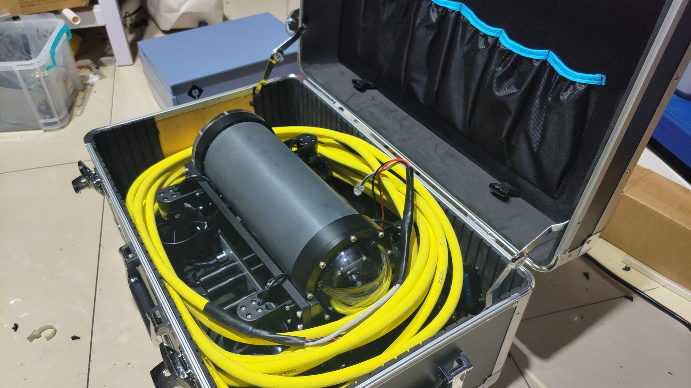
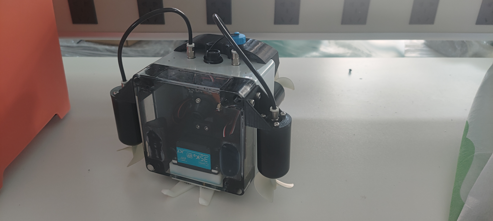

Shallow-water, medium-depth and stable hovering needs separate the five platforms quickly.
浅水、中等水深和稳定悬停需求能迅速拉开五个平台的适配边界。
Applications
应用场景
Each scene below is organized around operating depth, spatial restriction, observation target, motion stability and payload possibilities rather than internal technical jargon.
以下场景围绕作业水深、空间限制、观测目标、姿态稳定性和挂载可能性展开，而不是按内部技术口径堆砌。
Use scene conditions to narrow platform fit before comparing specific hardware paths.
先按场景条件收敛平台方向，再进入具体硬件比较。

Matching Logic
选型逻辑
Shallow-water, medium-depth and stable hovering needs separate the five platforms quickly.
浅水、中等水深和稳定悬停需求能迅速拉开五个平台的适配边界。
Open waters, narrow culverts, shafts and gate slots require very different size logic.
开阔水域、涵洞、井室和闸槽需要完全不同的尺寸与进入逻辑。
Routine review, fine multi-angle observation and experiment-grade stability are not the same task.
基础复核、精细多角度观测和实验级稳定性并不是同一种任务。
Some projects need standard video only, while others need sonar, sensing or field-side support packages.
有些任务只要视频观测，有些则需要声呐、传感器或驻场支持包。

Scene 01
场景 01
When visibility is limited and the mission includes piles, cables, sediment or path-support demand, the scene moves beyond basic video review.
当任务环境存在低能见度、桩基、缆线、沉积物或路径辅助需求时，场景已经超出基础视频观测范围。
Recommended delivery: platform + sensing module + mission-side support. Related product: SeaLeopard.
推荐交付方式：平台 + 传感模块 + 任务支持。对应产品：海豹。
Scene 02
场景 02
This scene values stable close-range observation, fixed-depth review and condition confirmation without diver-first deployment.
这一类任务强调稳定的近距观察、定深复核和在不依赖潜水前提下完成关键部位状态确认。
Recommended delivery: purchase or mission support depending whether the task is recurring or project-based.
推荐交付方式：按任务频率在采购和任务支持之间选择。
Scene 03
场景 03
This scene needs fine attitude control, repeatable operator response and clear multi-angle target alignment.
该场景关注精细姿态控制、稳定的操控响应和多角度目标对准能力。
Recommended delivery: rental, test support or project-specific expansion around experiment setup.
推荐交付方式：租赁、实验支持或围绕装置需求展开项目化增配。
Scene 04
场景 04
These tasks reward fast deployment and low operational threshold more than heavy payload growth.
这类任务更强调快速部署和低门槛进入，而不是重型挂载能力。
Recommended delivery: rental or short-duration mission support for pilot judgement and validation.
推荐交付方式：租赁或短周期任务支持，用于先导判断和前期验证。

Scene 05
场景 05
Culverts, gate slots, shafts, box channels and tank-like spaces need compact entry more than broad-water mobility.
涵洞、闸门槽、井室、箱涵和池体更重视紧凑进入能力，而不是大范围水域机动性。
Recommended delivery: portable inspection support, shallow-water anomaly review and light module expansion if required.
推荐交付方式：便携式检查支持、浅水异常点复核及按需轻量模块扩展。
Start with depth, entry size, observation target and whether payload growth is expected.
请先说明水深、入口尺寸、观测目标，以及是否需要挂载增配。